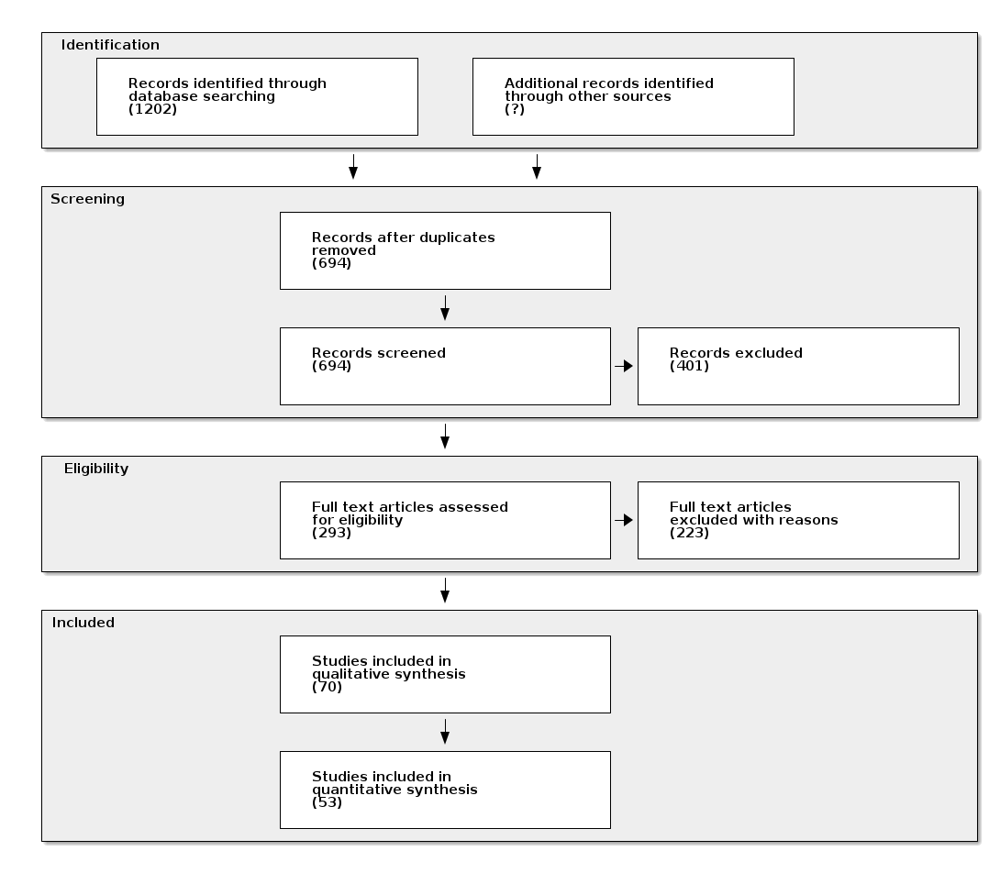
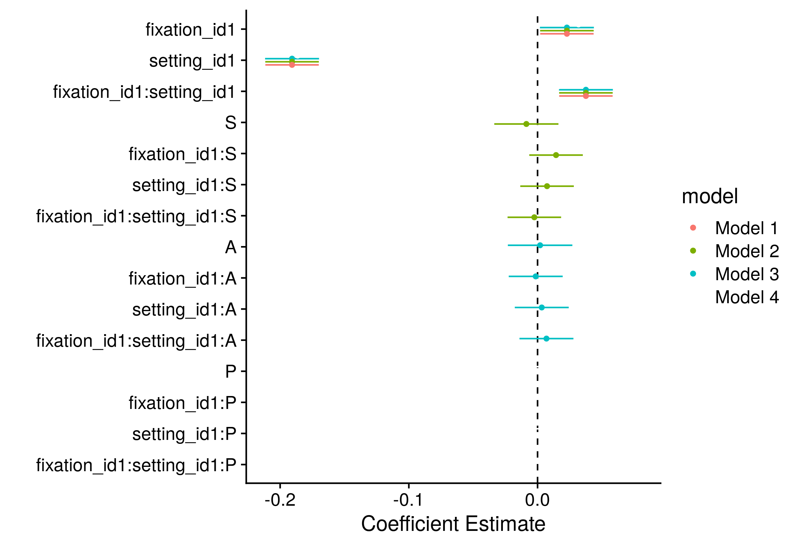

GSLS Annual Meeting
Final Meeting
Jonas Großekathöfer
Datum: 15.09.2020
Modulation der Aufmerksamkeit durch soziale Reize
Laborstudie 1: Multiple Gaze Cueing
Motivation
- Gruppen sollten soziale Reize verstärken, stärkerer Cueing Effekt?
Durchführung
- klassische Laborstudie
- Als reines Reaktionszeitexperiment
- + zusätzliches Eyetracking
Ergebnisse
Figure 1: Reaktionszeiten (RT) in ms der Versuchspersonen auf Gruppe (3 Gesichter) vs Individuen (1 Gesicht).
Status
Analyse in Vorbereitung:
- Nächster Schritt:
- Projekt aufbereiten
- Analysen neu rechnen
Laborstudie 2: Gaze Following in komplex Scenes
Motivation
- Priorisierung von sozialen Reizen in naturalistischen Szenen
- Replikation von vorigen Befunden, u.a. End & Gamer (2017)
- Aufmerksamkeitssteuerung durch Blickrichtung in komplexen Szenen
- Replikation von Zwickel & Võ (2010)
- Robust gegen top down-Modulation
Status
Publiziert:
Großekathöfer, J. D., Suchotzki, K., & Gamer, M. (2020). Gaze cueing in naturalistic scenes under top-down modulation — Effects on gaze behaviour and memory performance. Visual Cognition, 28(2), 135-147.
Metaanalyse: Gaze Cueing
Motivation
- Wie groß ist der wahre durchschnittliche gaze cueing Effekt?
- Produziert gaze cueing homogene Ergebnisse?
- Falls ja, wie groß ist die Varianz?
- Warum variieren die Effekte?
- IOR (d.h. Stimulus Onset Asynchrony)
- Cartoon vs Fotografien
- Emotionen
- Aufgabentyp
- Erkennung (und Korrektur für) eines potentiellen publication bias.
Durchführung

Figure 2: Flow chart
Ergebnisse
Gaze Cueing Effekt
Der durchschnittliche, geschätzte Effekt (\(\hat{\mu}\)) liegt bei:
\[\hat{\mu} = 12 ms, t(192) = 8.56, p < .001, SE = 1.34 ms\]
Studien Heterogenität
Test für Heterogenität der Effekte:
\[Q(df = 192) = 222.638, p = 0.064\]
Wie groß ist die Heterogenität?
Nur I2 = 26% der Varianz auf Grund von Heterogenität der Studien, 74% durch Sampling Varianz.
Moderatoren / Metaregression
- Aufgabentyp:
- Detection: \(\hat{\mu}\) = 7.8 ms
- Identification: \(\hat{\mu}\) = 13.8 ms
- Localisation: \(\hat{\mu}\) = 14.1 ms
- Emotionen:
- kein Effekt
- SOA
- kein Effekt
Publication bias

Figure 3: Funnel plot. Ein Regression Test unterstreicht die Asymmetry des Funnel plots: t = -6.3026, df = 191, p < .0001
Status
Manuskript in Vorbereitung:
- Nächster Schritt:
- Angemessenes Model gerechnet?
- Publication bias bei Multilevel Models?
- Manuskript fertigstellen
VR-/Feldstudie: 360° Videos
Motivation
- Vergleich Augenbewegung in realen und virtuellen Umgebungen
- Isolierung von möglichen Interaktionen und Bewertung
- Aktive und freie Exploration
- Betrachter ist kontextuell eingebettet
- Isolierung von möglichen Interaktionen und Bewertung
- Machbarkeit/Einsatz von HMDs für social cognition-Fragestellungen
- 360° Videos haben einige Vorteile gegenüber computergenerierten VR-Welten
Durchführung
Figure 6: Was eine Route!
Ergebnisse
Priorisierung von sozialen Reizen
Figure 7: Ein dotwhisker Plot: Schätzer sind als dot, CI als whisker dargestellt. fixation: Differenz Objekte - Person, setting: Differenz RE - VE, S: SIAS Score, A: AQK Score, P: Passanten, kontinuierliche Variablen skaliert.
Priorisierung von sozialen Reizen
Figure 8: What a Caption.
Einfluss von Persönlichkeitseigenschaften

Figure 9: What a caption!
Einfluss von Passanten
Figure 10: What a caption!
Einfluss von Passanten
Figure 11: What a Caption.
Konsistenz des Blickverhaltens
Figure 12: Ein heatplot, der die Korrelationen der Fixationen über verschiedene Umgebungen und Orte anzeigt. A zeigt die Korrelationen für Fixationen auf Personen, B für die Fixationen auf Objekte.
Status
Manuskript in Vorbereitung:
- Nächster Schritt:
- Fertigstellung des Manuskripts
Überblick
Projektübersicht
| Studie | aktueller Stand | |
|---|---|---|
| Labotstudie 1 | Datenauswertung in Vorbereitung | |
| Laborstudie 2 | publiziert | |
| Metaanalyse | Manuskript in Vorbereitung | |
| VR-/Feldstudie | Manuskript in Vorbereitung |
GSLS
| benötigt | Erreicht | |
|---|---|---|
| Commitee Meeting | 1x/Jahr | |
| Research Seminars | ||
| Lab Meeting: AG Meeting | wöchentlich | |
| Literature seminar: Journal club | wöchentlich | |
| Research training group seminar: SFB Meeting | wöchentlich | |
| Conferences: ECEM 2017, PuG 2018, SIPS 2019 | 1x/Jahr | |
| Summer Schools: Open Sciene, Meta analysis, ESSEM, SMLP | 1x/Jahr | |
| GSLS Courses (transferable skills/scientific courses) | 1x/Semester | 5/6 |
| Publications: Großekathöfer et al., 2020 | 1 in 3 Jahren |
Vielen Dank für Ihre Aufmerksamkeit.